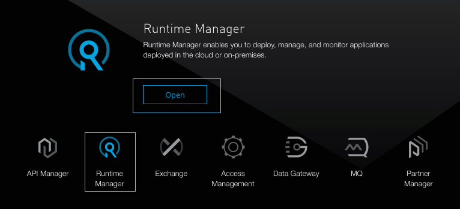
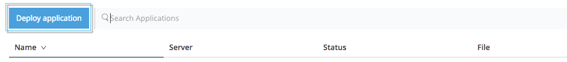
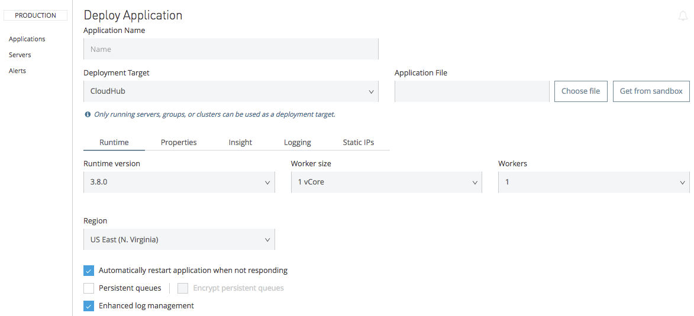
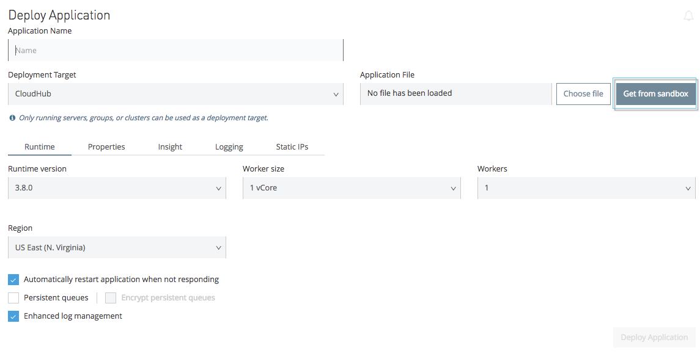
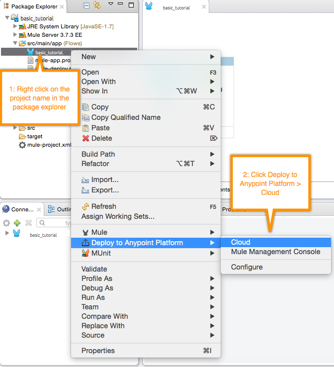
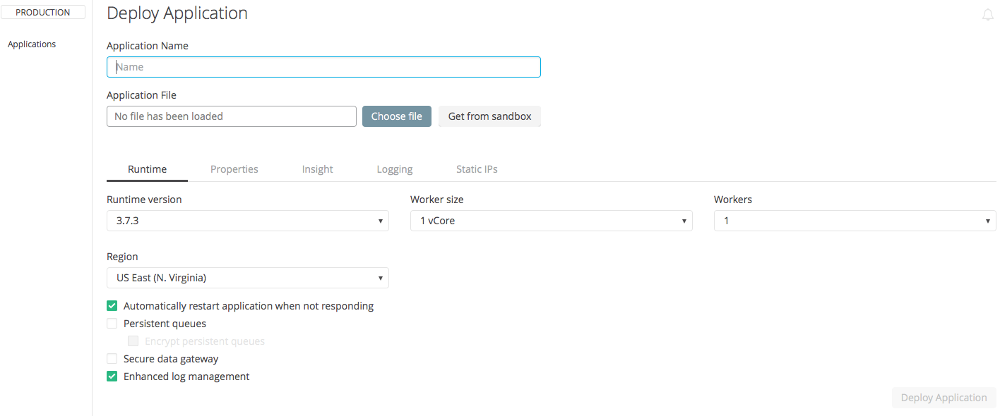
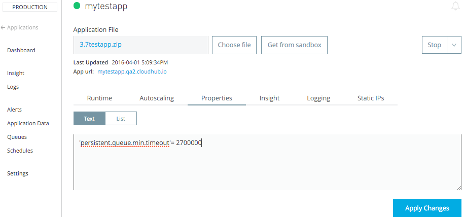
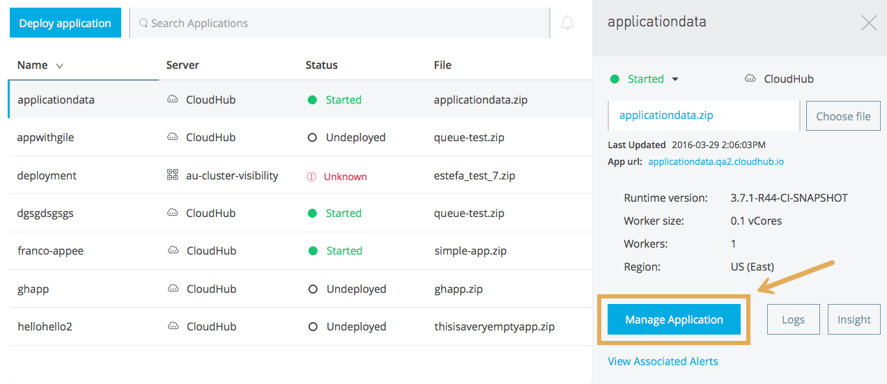
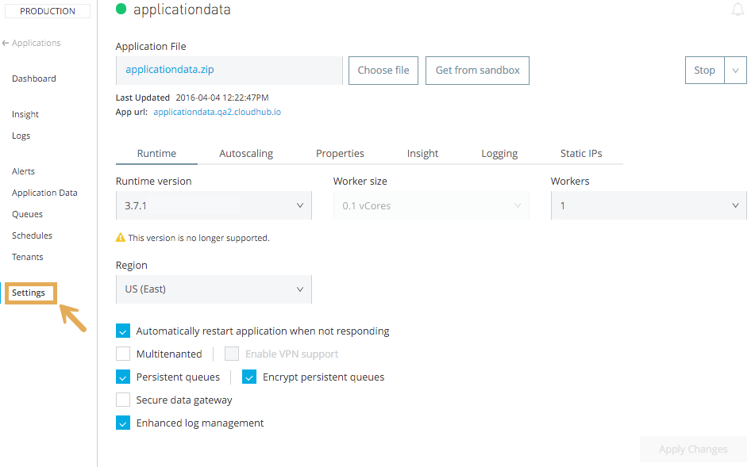

Deploying to CloudHub


You can deploy a Mule application to CloudHub via:
-
Anypoint Studio - Right-click your project and click Deploy to Anypoint Platform → Cloud.
-
Runtime Manager - in the cloud-based version of the Anypoint Platform. Go to the Runtime Manager section, and then from the Applications tab, click the Deploy application button.
This page describes the options on the Deploy Application panel that is identical in both cases.
|
Additionally, you can also deploy to CloudHub through:
|
|
Deploying to CloudHub is not possible via the Anypoint Platform Private Cloud Edition. If you’re still interested in requesting the Anypoint Platform Private Cloud Edition, please contact your sales representative. |
Deploying an Application
From Anypoint Platform
To deploy an application:
-
Sign in to the Anypoint Platform or click Sign up on the sign on page.
-
Hover your mouse over the Runtime Manager icon and click on it, or click Open
 -
Click Deploy application:
 -
The Deploy Application page opens:

From SandBox
If you created an application in a sandbox environment and tested it, you would eventually want to migrate it to production.
To do so:
-
Logged into your Anypoint Platform account, go to your production environment
-
In the Applications tab, click the Deploy Application button
-
Then when picking the application file, instead of uploading a new file, click Get from sandbox.
 -
You can then choose between your sandbox environments, and select an application to deploy in production. Select an application and click Apply
-
Continue setting up your deployment as you would with any normal deployment
Limitations
-
Only a CloudHub Administrator can move applications between environments.
-
To avoid domain name conflict, an application cannot exist in two environments at the same time. Alter the application’s name slightly to deploy it to another environment.
-
You cannot move an application into the same environment it’s in already. Runtime Manager prevents you from duplicating applications in a single environment. If you wish to have the same, or similar applications in a single environment, modify one application’s file to distinguish it from the original.
From Anypoint Studio
You can easily deploy your applications to CloudHub, straight from Anypoint Studio. This is specially helpful if you’re still developing the application and want to deploy it often to an online test environment.
-
With your application open in Anpoint Studio as a Mule Project, Right-click on the project node in the package explorer. Then select Deploy to Anypoint Platform > Cloud from the cascading menu.
 -
If this is your first time deploying in this way, a popup menu asks you to provide your login credentials for the Anypoint Platform. Studio stores your credentials and uses them automatically the next time you deploy to CloudHub.
You can manage these credentials through the Studio Preferences menu, in Anypoint Studio > Authentication. -
After you sign in, the Deploy Application menu opens.

| For an example of deploying to CloudHub directly from Anypoint Studio, see Deploy to CloudHub. |
Creating an Application Name
Every application requires a unique application domain name. The application domain identifies your application in the Runtime Manager and also provides you with a public URL, http://myapplicationdomain.cloudhub.io, for accessing the application if it exposes any inbound endpoints.
In the Deploy Application dialog, enter a unique application name. The Application Name also becomes the cloudhub.io domain name that you use to access your application; for example the Application Name, abcde is accessible at http://abcde.cloudhub.io. Valid names contain alphanumeric characters and dashes, and contain at most 42 characters. If the name is valid, the Runtime Manager alerts you whether it is available or already reserved by another user.
| With the CloudHub dedicated load balancer, you can then optionally implement mapping rules to set your application’s public URL to any other path you choose, as long as you own the domain. |
Deployment Target
If you already have any servers registered to the Anypoint Platform, you will see a Deployment Target field that lets you specify where you want to deploy your application:
-
On the CloudHub worker cloud
-
On an on-premises server, server group, or cluster
This document focuses on deploying to CloudHub, for more information on deploying to servers, server groups and clusters, see Deploying to Your Own Servers.
Application File
Upload a new file for deployment. Click the Choose file button, select your application file, and then click Open. You can also click the Get from sandbox button to copy a file from a non-production environment into your current environment. (If the Get From Sandbox button does not appear, you may first need to create a non-production environment to view this option.)
Note: The application file size limit is 200 MB.
Runtime Tab
Runtime Version
Using the drop-down menu, select the Runtime version to which you to deploy:
|
Once deployed and running, if any security patches, OS updates, or critical bug fixes are released for the selected runtime version, then you will be prompted about this change. You will be able to control exactly when each update is applied. If you take no action, updates will be applied automatically for you after 30 days to ensure your applications run with the latest security patches.
Worker Sizing
After you deploy your application, you can allocate an amount and a size for the Worker size of your application. On each application, workers are responsible for executing your application logic.
|
Only running applications count for workers usage. |
There are 5 different worker sizes to choose from, with the compute and memory capacities described in the following table:
Worker Sizes |
0.1 vCores |
0.2 vCores |
1 vCores |
2 vCores |
4 vCores |
Workers that have less than 1 vCore capacity (0.1 vCores and 0.2 vCores) offer limited CPU and IO for smaller work loads. Each worker has 8 GB of storage, which is used for both system and application storage. Applications with greater storage needs (verbose logging etc.) should use one of the larger worker sizes - 2 vCores or 4 vCores, which have additional storage as follows:
-
1 vCores workers have an additional 4 GB of SSD storage mounted on /tmp
-
2 vCores workers have an additional 32 GB of SSD storage mounted on /tmp
-
4 vCores workers have an additional 80 GB of storage, mounted as two volumes on /tmp (40 GB), and /opt/storage (40 GB)
| The workers with additional storage as listed above are only available for Mule runtimes 3.6.2 or later, or API Gateway 2.0.2 or later. |
To select the worker size and amount of each, select options from the drop-down menu to configure the computing power you need:
Depending on how many vCores your account possesses, some of these options may not be eligible, as you may not have enough available capacity.
| If you select more vCores than are available in your account, CloudHub allows you to create the application using the console, but you cannot start your application until vCores are available. |
When deploying an application with more than one worker, CloudHub automatically load-balances any incoming traffic across your allocated workers. For more information, see CloudHub Fabric.
Region
If you have global deployment enabled on your account, you can change the Region to which your application deploys using the drop-down menu. Administrators can set the default region on the Organization tab in Account Settings, but that region can be adjusted here when the application is deployed, if necessary.
-
Note that applications deployed to Europe automatically have their domain updated to
http://myapplicationdomain.eu.cloudhub.io. -
Note that applications deployed to Asia / Pacific automatically have their domain updated to
http://myapplicationdomain.au.cloudhub.io.
Automatic Restart
If you are deploying to a runtime that supports worker monitoring (3.4.0 runtime or later), you have the option to check Automatically restart application when not responding. With this box checked, CloudHub automatically restarts your application when the monitoring system discovers a problem with your application. If this box is not checked, CloudHub produces all the log messages, notifications, and any configured alerts, but takes no action to restart the application.
Read more about Worker Monitoring.
Persistent Queues
Check this box to enable persistent queues on your application. Persistent queues protect against message loss and allow you to distribute workloads across a set of workers. Before you can take advantage of persistent queueing, your application needs to be set up to use queues. See CloudHub Fabric for more information.
|
If your mule application is using Batch component and persistent queues, then you might see batch record being processed multiple times. All batch records are stored in Amazon SQS and by default the visibility of the message is set to 70 seconds. If your batch process takes longer than 70 seconds, then batch process might see the same message again and process it multiple times. To avoid this issue please set 'persistent.queue.min.timeout' system parameter to a reasonable value, for example if your batch process takes 30 minutes to complete then set value to 'persistent.queue.min.timeout=2700000' milliseconds ( 45 Minutes). Maximum value of 43000000 milliseconds (12 hours) is supported. See screen shot below for setting the value in cloudhub

|
Properties Tab
You can also optionally specify properties that your application requires. This allows you to externalize important pieces of configuration which may switch depending on the environment in which you’re deploying. For example, if you’re using a Mule application locally, you might configure your database host to be localhost. But if you’re using CloudHub, you might configure it to be an Amazon RDS server.
To create an application property, click the Properties tab and set the variable by either using a text key=value format or by using the list format with two text boxes. After you’ve made the change, click Apply Changes.
These application properties can be used inside your Mule configuration. For example:
<spring:bean id="jdbcDataSource" class="org.enhydra.jdbc.standard.StandardDataSource" destroy-method="shutdown">
<spring:property name="driverName" value="com.mysql.jdbc.Driver"/>
<spring:property name="url"value="${database.url}"/>
</spring:bean>Overriding Properties in CloudHub vs. On-Premises Mule Runtimes
Just like with on-premise Mule runtime deployments, applications that you deploy to CloudHub can still bundle their own property placeholder or secure property placeholder files inside the deployable archive file. CloudHub substitutes these properties into the application when the application starts. With an on-premise Mule runtime, there are several ways you can override property values bundled inside the application.
-
You can configure an external location to add property placeholder or secure property placeholder files to override properties.
-
You can set Java system environment variables at deployment time to override properties.
To use the second option, with an on-premises server you could deploy your application with the following command:
mule -M-Dsecret.key=toSecretPassword -M-Denv=prod -M-Ddb.password=secretPassword -app myApp.zip
In this case all the values typed into the command would only be stored in memory, they are never stored in any file.
With CloudHub, these techniques to override properties work differently.
The first approach is difficult to translate to CloudHub: when an application is deployed into CloudHub it is harder to write override properties files into the file system.
The second approach is much easier to translate to CloudHub: the Properties tab does allow you to specify Java system environment variables which will function in the same way as adding environment variables when you deploy to an on-premises server. Read more about how to set these variables in Managing Applications on CloudHub.
If you also have any property names set in a mule-app.properties file inside your application or in bundled property placeholder files, then when your application is deployed, any entries in the CloudHub Properties tab with the same name will override the matching value bundled with the application.
| It is possible to change the behavior of the application to not allow CloudHub properties to override properties bundled with the deployable archive. You do this by changing the options in the Property Placeholder element in the Mule application to prefer property placeholder files over JVM system environment variables. See Spring documentation on Property Placeholder options for more information on non-default property placeholder options. |
Overriding Secure Properties
Note that you can flag application properties as secure so that their values are not visible to users at runtime or passed between the server and the console. You can also include an 'applications.properties' file in your application bundle, which can include properties that are marked as secure, and they will be automatically treated as such. These properties can also be overriden by new values you can set via the Runtime Manager console at runtime. See Secure Application Properties for more information.
Insight Tab
The Insight tab lets you specify metadata options for the Insight analytics feature. For more information, see Insight.
Logging Tab
CloudHub stores activity logs, which can be viewed or downloaded from the platform. The Logging tab of the deploy menu lets you configure how these logs are structured. Specifically, it lets you set how the different logging levels are applied (INFO, DEBUG, WARN, or ERROR), so that they don’t follow the default usage. For more information, see Viewing Log Data.
| The bell icon in the upper right corner lets you manage notifications. For more information, see Alerts |
Static IPs Tab
To enable a static IP address for your application, go to the Static IPs tab, then check the Use Static IP checkbox.
To pre-allocate static IPs for your application, select a region from the Region dropdown menu, then click Allocate Static IP to allocate a static IP for the chosen region. The static IP address is allocated when the application is deployed to that region. If the application is already running, applying the static IP change triggers a restart of the application with the newly-applied static IP.
Applications with static IPs can only have one instance.
By default, the number of static IPs allocated to your organization is equal to twice the number of Production vCores in your subscription. This number is displayed under the Use Static IP checkbox. If you need to increase this quota, you can contact MuleSoft Support.
If an application has static IPs reserved in multiple regions, it picks up the IP from whichever region it is deployed to. This allows you to pre-configure IP rules for multiple regions, for disaster recovery (DR) scenario.
If you need to free up some of your overall static IP allocation, you can release a static IP that is currently allocated to an application.
Deployment Execution
After you complete the above steps, click Create and CloudHub uploads your application and automatically begins the deployment process. During this process, your view is switched to the log view allowing you to monitor the process of your application deployment. This process could take several minutes. During the deployment, the application status indicator changes to yellow to indicate deployment in progress.
When deployment is complete, the application status indicator changes to green and you are notified in the status area that the application has deployed successfully. Here’s what is in the logs:
Successfully deployed [mule application name]
Configuring a Deployed Application
Most of the settings discussed in the steps above can be edited once the application is already deployed to CloudHub. To do so you must:
-
In the Applications tab, select an application entry and click Manage Application:
 -
Click the Settings tab:

Auto-Deploy a Proxy from API Manager
If you’ve registered an API in the Anypoint Platform, you can easily run it through an auto generated proxy to track its usage and implement policies. You can deploy this proxy to CloudHub without ever needing to go into the Runtime Manager section of the Anypoint platform. From a menu in the API version page, you can trigger the deployment of your proxy and set up the application name in CloudHub, the CloudHub environment and the Gateway version to use. Then, you can optionally access the Runtime Manager deployment menu for this proxy and configure advanced settings. See Setting Up a Proxy.
Deployment Errors
If an error occurs and the application cannot be deployed, the application status indicator changes to Failed. You are alerted in the status area that an error occurred. Check the log details for any application deployment errors. You need to correct the error, upload the application, and deploy again.
See Also
-
See a tutorial about deploying to CloudHub directly from Anypoint Studio Deploy to CloudHub
-
Read more about what CloudHub is and what features it has
-
Managing Deployed Applications contains general information about hoy to manage your application once deployed
-
Managing Applications on CloudHub contains more information on how to manage your applications with setting that are specific to CloudHub
-
Monitoring Applications shows you how you can set up email alerts for whenever certain events occur with your application or workers
-
Deploy using the CloudHub Command Line Interface.
-
A REST API is also available for automating deployments to CloudHub.
-
For information on deploying to servers, server groups and clusters, see Deploying to Your Own Servers.